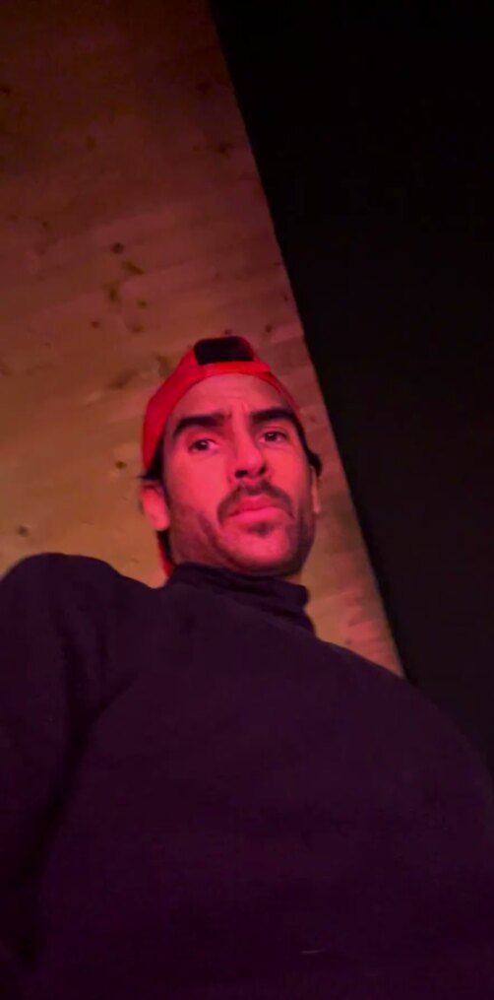
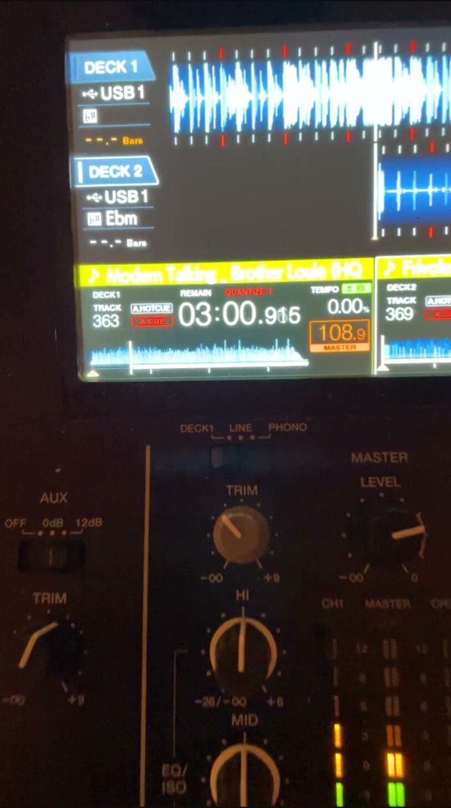
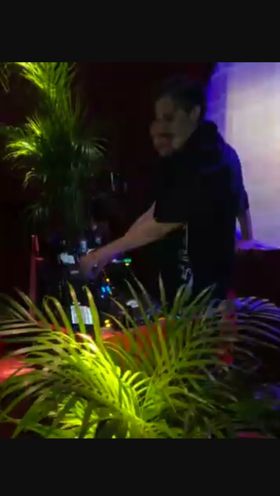

Press kit · Édition Oct 2026
Everything a promoter needs, in one place.
M.O.S, Brussels. Eclectic house, emotional edits and high-energy closing sets. Bios in EN and FR, photos in ready sizes, verified credits, booking contact.
Selected dates.
From the artist's published posters and event pages.
Voodoo Village
Grimbergen · 2023 & 2024 editions
No Man's World
Desert festival · bill with Marc Romboy, Jonathan Kaspar
Hangar, Brussels
MIND parties, multiple editions
Fondation Boghossian
Brussels
Jeux d'Hiver
Brussels
The Egg · Maison de la Poste · Reset
Brussels
Tofu&Acid, Munich · Private, Los Angeles
International dates
Kiosk Radio & Jam Radio
Broadcast sessions, latest Kiosk session 02/26
Festival bills shared with Adriatique, WhoMadeWho, Paula Temple, NTO, Nicole Moudaber, Mind Against, Kevin de Vries and Marc Romboy.
Biography.
Copy-ready. Short version first, both languages.
English
Short. M.O.S is a DJ and producer from Brussels playing eclectic, bass-forward house built on emotional edits. Two editions of Voodoo Village, Hangar's MIND parties, Kiosk Radio and Jam Radio sessions, floors from Munich to Los Angeles. Every room is a record.
Full. M.O.S is a DJ and producer from Brussels. His sets move through eclectic, bass-forward house built on emotional edits, with selections shaped to the room in front of him rather than a fixed playlist. The range shows in the rooms: two editions of Voodoo Village on bills with Adriatique, WhoMadeWho and Nicole Moudaber, a desert festival with Marc Romboy, Hangar's MIND parties, evenings at Fondation Boghossian and Jeux d'Hiver, broadcast sessions for Kiosk Radio and Jam Radio, and private floors from Munich to Los Angeles. On record: the Gemmayzeh remix with Lui on Monkey Parade Records, and self-released tracks including Amour Seum, Cataclysme 2.0 and Automatic Sex. His closing sets are the signature: high-energy, emotional, built to keep a floor present until the lights come up.
Français
Court. M.O.S est un DJ et producteur bruxellois, entre house éclectique et bass-forward et edits émotionnels. Deux éditions de Voodoo Village, les soirées MIND du Hangar, des sessions Kiosk Radio et Jam Radio, des salles de Munich à Los Angeles. Chaque salle est un disque.
Long. M.O.S est un DJ et producteur bruxellois. Ses sets traversent une house éclectique et bass-forward, portée par des edits émotionnels, des sélections façonnées pour la salle plutôt que par une playlist figée. Deux éditions de Voodoo Village aux côtés d'Adriatique, WhoMadeWho et Nicole Moudaber, un festival dans le désert avec Marc Romboy, les soirées MIND du Hangar, la Fondation Boghossian, les Jeux d'Hiver, des sessions Kiosk Radio et Jam Radio, et des salles privées de Munich à Los Angeles. Côté disques : le remix de Gemmayzeh avec Lui sur Monkey Parade Records, et des titres autoproduits dont Amour Seum, Cataclysme 2.0 et Automatic Sex. Ses closing sets sont la signature : intenses, émotionnels, pensés pour garder la salle présente jusqu'aux lumières.
Facts.
Name
M.O.S (Michael Oulbaz Suarez)
Base
Brussels, Belgium
Sound
Eclectic, bass-forward house
Formats
Club · Closing · Radio · Open air
Label credit
Monkey Parade Records
Booking
SoundCloud
Photos.
Right-click or tap Download for the web size. The ZIP holds web-1600 and social-1080 versions of all 25.









Video.
Broadcast sets are watchable directly; raw performance files for promos and screens are available on request.
Kiosk Radio session, Bruxelles →
Full broadcast set on YouTube, latest session 02/26
Jam Radio liveset
Broadcast liveset, Brussels
Performance & promo video files
Raw clips and the animated M.O.S logo are available on request: booking.mosmusic@gmail.com
Brand.

- Ink #171310
- Paper #F2EDE4
- Pink #E04E8F
- Display: Anton · Text: Familjen Grotesk
- Motif: MUSIC EMOTION LOVE ENERGY
- Please do not recolour or distort the wordmark. Vector files in the ZIP.